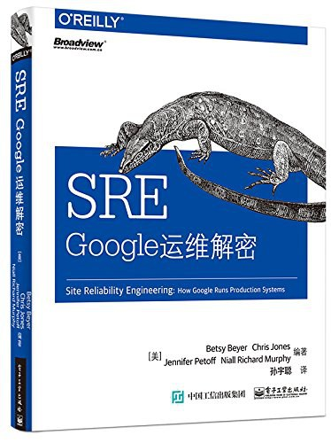
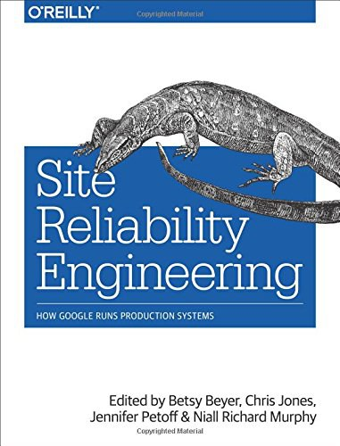

SRE¶

简介:
标题：SRE
副标题：Google 运维解密
译者：孙宇聪
评分：8.8（）
出版时间：2016-10-01
ISBN: 9787121297267
页数: 450
内容简介:
大型软件系统生命周期的绝大部分都处于 “使用” 阶段，而非 “设计” 或 “实现” 阶段。
那么为什么我们却总是认为软件工程应该首要关注设计和实现呢？
在《SRE：Google 运维解密》中，Google SRE 的关键成员解释了他们是如何对软件进行生命周期的整体性关注的，
以及为什么这样做能够帮助 Google 成功地构建、部署、监控和运维世界上现存最大的软件系统。
通过阅读《SRE：Google 运维解密》，读者可以学习到
Google 工程师在提高系统部署规模、改进可靠性和资源利用效率方面的指导思想与具体实践
—— 这些都是可以立即直接应用的宝贵经验。
任何一个想要创建、扩展大规模集成系统的人都应该阅读《SRE：Google 运维解密》。
《SRE：Google 运维解密》针对如何构建一个可长期维护的系统提供了非常宝贵的实践经验。
作者简介:
Betsy Beyer 是 Google 纽约负责 SRE 的一名技术文档作家。
她之前曾为遍布全球的 Google 数据中心与 Mountain View 硬件运维团队编写文档。
在搬到纽约之前，Betsy 是 Stanford 大学技术性写作课程的讲师。
她曾经学习国际关系与英文文学，并在 Stanford 和 Tulane 获得学历。
Chris Jones 是 Google App Engine 的一名 SRE。
Google App Engine 是一个 PaaS 服务，每天处理超过 280 亿个请求。
他的办公室在旧金山，他之前的工作包括 Google 广告统计、数据仓库，以及用户支持系统的维护。
在之前，Chris 曾经在学校 IT 行业任职，同时参与过竞选数据分析，以及一些 BSD 内核的修改。
他有计算机工程、经济学，以及技术政策学的学位。同时他也是一名有执照的职业工程师。
Jennifer Petoff 是 Google SRE 团队的一名项目经理，工作地点在都柏林，爱尔兰。
她曾经负责管理大型全球项目，包括：科学研究、工程、人力资源，以及广告等。
Jennifer 在加入 Google 之前，曾在化工行业任职八年。
她获得了 Stanford 大学的化学博士与学士学位，同时她还拥有 Rochester 大学的心理学学位。
Niall Murphy 是 Google 爱尔兰团队广告 SRE 的负责人。
他拥有 20 年互联网行业经验，目前是 INEX（爱尔兰网络互联枢纽）的主席。
他曾写作及参与写作很多科技文章与书籍，包括 O’Reilly 出版的 IPv6 Network Administration，和很多 RFC。
他目前在参与书写爱尔兰互联网发展史。
他拥有计算机科学、数学，以及诗歌学的学历（他当时一定是想错了！）。
他目前与妻子和两个儿子居住在都柏林。
译者:
孙宇聪，前 Google SRE（2007-2015），山景城总部，曾参与构建运维 Youtube 全球 CDN 网络，
2008 年奥运会直播项目，构建维护海量视频编码传输系统。
后参与 Google 内部云平台运维工作，负责运维全球百万级别服务器集群，以及 Borg、Omega 等大规模集群理系统。
2015 年加入 Coding，任 CTO 一职。
回国后，积极推动国内容器化运维架构升级。
目前是开放运维联盟之应用运维规范制定组，高可用运维规范制定者。
目录¶
概览:
前言 xxxi
序言 xxxv
第 Ⅰ 部分 概览¶
第 1 章 介绍:
系统管理员模式 2
Google 的解决之道：SRE 4
SRE 方法论 6
确保长期关注研发工作 6
在保障服务 SLO 的前提下最大化迭代速度 7
监控系统 8
应急事件处理 8
变更管理 9
需求预测和容量规划 9
资源部署 10
效率与性能 10
小结 10
第 2 章 Google 生产环境：SRE 视角:
硬件 11
管理物理服务器的系统管理软件 13
管理物理服务器 13
存储 14
网络 15
其他系统软件 16
分布式锁服务 16
监控与警报系统 16
软件基础设施 17
研发环境 17
莎士比亚搜索：一个示范服务 18
用户请求的处理过程 18
任务和数据的组织方式 19
第 Ⅱ 部分 指导思想¶
第 3 章 拥抱风险:
管理风险 23
度量服务的风险 24
服务的风险容忍度 25
辨别消费者服务的风险容忍度 26
基础设施服务的风险容忍度 28
使用错误预算的目的 30
错误预算的构建过程 31
好处 32
第 4 章 服务质量目标:
服务质量术语 34
指标 34
目标 35
协议 36
指标在实践中的应用 37
运维人员和最终用户各关心什么 37
指标的收集 37
汇总 38
指标的标准化 39
目标在实践中的应用 39
目标的定义 40
目标的选择 40
控制手段 42
SLO 可以建立用户预期 42
协议在实践中的应用 43
第 5 章 减少琐事 44:
琐事的定义 44
为什么琐事越少越好 45
什么算作工程工作 46
琐事繁多是不是一定不好 47
小结 48
第 6 章 分布式系统的监控:
术语定义 49
为什么要监控 50
对监控系统设置合理预期 51
现象与原因 52
黑盒监控与白盒监控 53
4 个黄金指标 53
关于长尾问题 54
度量指标时采用合适的精度 55
简化，直到不能再简化 55
将上述理念整合起来 56
监控系统的长期维护 57
Bigtable SRE ：警报过多的案例 57
Gmail ：可预知的、可脚本化的人工干预 58
长跑 59
小结 59
第 7 章 Google 的自动化系统的演进:
自动化的价值 60
一致性 60
平台性 61
修复速度更快 61
行动速度更快 62
节省时间 62
自动化对 Google SRE 的价值 62
自动化的应用案例 63
Google SRE 的自动化使用案例 63
自动化分类的层次结构 64
让自己脱离工作：自动化所有的东西 66
舒缓疼痛：将自动化应用到集群上线中 67
使用 Prodtest 检测不一致情况 68
幂等地解决不一致情况 69
专业化倾向 71
以服务为导向的集群上线流程 72
Borg ：仓库规模计算机的诞生 73
可靠性是最基本的功能 74
建议 75
第 8 章 发布工程:
发布工程师的角色 76
发布工程哲学 77
自服务模型 77
追求速度 77
密闭性 77
强调策略和流程 78
持续构建与部署 78
构建 78
分支 79
测试 79
打包 79
Rapid 系统 80
部署 81
配置管理 81
小结 82
不仅仅只对 Google 有用 83
一开始就进行发布工程 83
第 9 章 简单化:
系统的稳定性与灵活性 85
乏味是一种美德 86
我绝对不放弃我的代码 86
“负代码行” 作为一个指标 87
最小 API 87
模块化 87
发布的简单化 88
小结 88
第 Ⅲ 部分 具体实践¶
第 10 章 基于时间序列数据进行有效报警:
Borgmon 的起源 94
应用软件的监控埋点 95
监控指标的收集 96
时间序列数据的存储 97
标签与向量 98
Borg 规则计算 99
报警 104
监控系统的分片机制 105
黑盒监控 106
配置文件的维护 106
十年之后 108
第 11 章 on-call 轮值:
介绍 109
on-call 工程师的一天 110
on-call 工作平衡 111
数量上保持平衡 111
质量上保持平衡 111
补贴措施 112
安全感 112
避免运维压力过大 114
运维压力过大 114
奸诈的敌人 — 运维压力不够 115
小结 115
第 12 章 有效的故障排查手段:
理论 117
实践 119
故障报告 119
定位 119
检查 120
诊断 122
测试和修复 124
神奇的负面结果 125
治愈 126
案例分析 127
使故障排查更简单 130
小结 130
第 13 章 紧急事件响应:
当系统出现问题时怎么办 131
测试导致的紧急事故 132
细节 132
响应 132
事后总结 132
变更部署带来的紧急事故 133
细节 133
事故响应 134
事后总结 134
流程导致的严重事故 135
细节 135
灾难响应 136
事后总结 136
所有的问题都有解决方案 137
向过去学习，而不是重复它 138
为事故保留记录 138
提出那些大的，甚至不可能的问题：假如…… 138
鼓励主动测试 138
小结 138
第 14 章 紧急事故管理:
无流程管理的紧急事故 140
对这次无流程管理的事故的剖析 141
过于关注技术问题 141
沟通不畅 141
不请自来 142
紧急事故的流程管理要素 142
嵌套式职责分离 142
控制中心 143
实时事故状态文档 143
明确公开的职责交接 143
一次流程管理良好的事故 144
什么时候对外宣布事故 144
小结 145
第 15 章 事后总结：从失败中学习:
Google 的事后总结哲学 146
协作和知识共享 148
建立事后总结文化 149
小结以及不断优化 151
第 16 章 跟踪故障:
Escalator 152
Outalator 153
聚合 154
加标签 155
分析 155
未预料到的好处 156
第 17 章 测试可靠性:
软件测试的类型 158
传统测试 159
生产测试 160
创造一个构建和测试环境 163
大规模测试 165
测试大规模使用的工具 166
针对灾难的测试 167
对速度的渴求 168
发布到生产环境 170
允许测试失败 170
集成 172
生产环境探针 173
小结 175
第 18 章 SRE 部门中的软件工程实践:
为什么软件工程项目对 SRE 很重要 176
Auxon 案例分析：项目背景和要解决的问题 177
传统的容量规划方法 177
解决方案：基于意图的容量规划 179
基于意图的容量规划 180
表达产品意图的先导条件 181
Auxon 简介 182
需求和实现：成功和不足 183
提升了解程度，推进采用率 185
团队内部组成 187
在 SRE 团队中培养软件工程风气 187
在 SRE 团队中建立起软件工程氛围：招聘与开发时间 188
做到这一点 189
小结 190
第 19 章 前端服务器的负载均衡:
有时候硬件并不能解决问题 191
使用 DNS 进行负载均衡 192
负载均衡：虚拟 IP 194
第 20 章 数据中心内部的负载均衡系统:
理想情况 198
识别异常任务：流速控制和跛脚鸭任务 199
异常任务的简单应对办法：流速控制 199
一个可靠的识别异常任务的方法：跛脚鸭状态 200
利用划分子集限制连接池大小 201
选择合适的子集 201
子集选择算法一：随机选择 202
子集选择算法二：确定性算法 204
负载均衡策略 206
简单轮询算法 206
最闲轮询策略 209
加权轮询策略 210
第 21 章 应对过载:
QPS 陷阱 213
给每个用户设置限制 213
客户端侧的节流机制 214
重要性 216
资源利用率信号 217
处理过载错误 217
决定何时重试 218
连接造成的负载 220
小结 221
第 22 章 处理连锁故障:
连锁故障产生的原因和如何从设计上避免 224
服务器过载 224
资源耗尽 225
服务不可用 228
防止软件服务器过载 228
队列管理 229
流量抛弃和优雅降级 230
重试 231
请求延迟和截止时间 234
慢启动和冷缓存 236
保持调用栈永远向下 238
连锁故障的触发条件 238
进程崩溃 239
进程更新 239
新的发布 239
自然增长 239
计划中或计划外的不可用 239
连锁故障的测试 240
测试直到出现故障，还要继续测试 240
测试最常用的客户端 241
测试非关键性后端 242
解决连锁故障的立即步骤 242
增加资源 242
停止健康检查导致的任务死亡 242
重启软件服务器 242
丢弃流量 243
进入降级模式 243
消除批处理负载 244
消除有害的流量 244
小结 244
第 23 章 管理关键状态：利用分布式共识来提高可靠性:
使用共识系统的动力：分布式系统协调失败 248
案例 1 ：脑裂问题 249
案例 2 ：需要人工干预的灾备切换 249
案例 3 ：有问题的小组成员算法 249
分布式共识是如何工作的 250
Paxos 概要：协议示例 251
分布式共识的系统架构模式 251
可靠的复制状态机 252
可靠的复制数据存储和配置存储 252
使用领头人选举机制实现高可用的处理系统 253
分布式协调和锁服务 253
可靠的分布式队列和消息传递 254
分布式共识系统的性能问题 255
复合式 Paxos ：消息流过程详解 257
应对大量的读操作 258
法定租约 259
分布式共识系统的性能与网络延迟 259
快速 Paxos 协议：性能优化 260
稳定的领头人机制 261
批处理 262
磁盘访问 262
分布式共识系统的部署 263
副本的数量 263
副本的位置 265
容量规划和负载均衡 266
对分布式共识系统的监控 270
小结 272
第 24 章 分布式周期性任务系统:
Cron 273
介绍 273
可靠性 274
Cron 任务和幂等性 274
大规模 Cron 系统 275
对基础设施的扩展 275
对需求的扩展 276
Google Cron 系统的构建过程 277
跟踪 Cron 任务的状态 277
Paxos 协议的使用 277
领头人角色和追随者角色 278
保存状态 281
运维大型 Cron 系统 282
小结 283
第 25 章 数据处理流水线:
流水线设计模式的起源 284
简单流水线设计模式与大数据 284
周期性流水线模式的挑战 285
工作分发不均造成的问题 285
分布式环境中周期性数据流水线的缺点 286
监控周期性流水线的问题 287
惊群效应 287
摩尔负载模式 288
Google Workflow 简介 289
Workflow 是模型 — 视图 — 控制器（MVC）模式 290
Workflow 中的执行阶段 291
Workflow 正确性保障 291
保障业务的持续性 292
小结 294
第 26 章 数据完整性：读写一致:
数据完整性的强需求 296
提供超高的数据完整性的策略 297
备份与存档 298
云计算环境下的需求 299
保障数据完整性和可用性：Google SRE 的目标 300
数据完整性是手段，数据可用性是目标 300
交付一个恢复系统，而非备份系统 301
造成数据丢失的事故类型 301
维护数据完整性的深度和广度的困难之处 303
Google SRE 保障数据完整性的手段 304
24 种数据完整性的事故组合 304
第一层： 软删除 305
第二层：备份和相关的恢复方法 306
额外一层：复制机制 308
1T vs. 1E ：存储更多数据没那么简单 309
第三层：早期预警 310
确保数据恢复策略可以正常工作 313
案例分析 314
Gmail—2011 年 2 月：从 GTape 上恢复数据（ 磁带） 314
Google Music—2012 年 3 月：一次意外删除事故的检测过程 315
SRE 的基本理念在数据完整性上的应用 319
保持初学者的心态 319
信任但要验证 320
不要一厢情愿 320
纵深防御 320
小结 321
第 27 章 可靠地进行产品的大规模发布:
发布协调工程师 323
发布协调工程师的角色 324
建立发布流程 325
发布检查列表 326
推动融合和简化 326
发布未知的产品 327
起草一个发布检查列表 327
架构与依赖 328
集成 328
容量规划 328
故障模式 329
客户端行为 329
流程与自动化 330
开发流程 330
外部依赖 331
发布计划 331
可靠发布所需要的方法论 332
灰度和阶段性发布 332
功能开关框架 333
应对客户端滥用行为 334
过载行为和压力测试 335
LCE 的发展 335
LCE 检查列表的变迁 336
LCE 没有解决的问题 337
小结 338
第 Ⅳ 部分 管理¶
第 28 章 迅速培养 SRE 加入 on-call:
新的 SRE 已经招聘到了，接下来怎么办 341
培训初期：重体系，而非混乱 344
系统性、累积型的学习方式 345
目标性强的项目工作，而非琐事 346
培养反向工程能力和随机应变能力 347
反向工程：弄明白系统如何工作 347
统计学和比较性思维：在压力下坚持科学方法论 347
随机应变的能力：当意料之外的事情发生时怎么办 348
将知识串联起来：反向工程某个生产环境服务 348
有抱负的 on-call 工程师的 5 个特点 349
对事故的渴望：事后总结的阅读和书写 349
故障处理分角色演习 350
破坏真的东西，并且修复它们 351
维护文档是学徒任务的一部分 352
尽早、尽快见习 on-call 353
on-call 之后：通过培训的仪式感，以及日后的持续教育 354
小结 354
第 29 章 处理中断性任务:
管理运维负载 356
如何决策对中断性任务的处理策略 356
不完美的机器 357
流状态 357
将一件事情做好 358
实际一点的建议 359
减少中断 361
第 30 章 通过嵌入 SRE 的方式帮助团队从运维过载中恢复:
第一阶段：了解服务，了解上下文 364
确定最大的压力来源 364
找到导火索 364
第二阶段：分享背景知识 365
书写一个好的事后总结作为示范 366
将紧急事件按类型排序 366
第三阶段：主导改变 367
从基础开始 367
获取团队成员的帮助 367
解释你的逻辑推理过程 368
提出引导性问题 368
小结 369
第 31 章 SRE 与其他团队的沟通与协作:
沟通：生产会议 371
议程 372
出席人员 373
SRE 的内部协作 374
团队构成 375
高效工作的技术 375
SRE 内部的协作案例分析：Viceroy 376
Viceroy 的诞生 376
所面临的挑战 378
建议 379
SRE 与其他部门之间的协作 380
案例分析：将 DFP 迁移到 F1 380
小结 382
第 32 章 SRE 参与模式的演进历程:
SRE 参与模式：是什么、怎么样以及为什么 383
PRR 模型 384
SRE 参与模型 384
替代性支持 385
PRR ：简单 PRR 模型 386
参与 386
分析 387
改进和重构 387
培训 388
“接手” 服务 388
持续改进 388
简单 PRR 模型的演进：早期参与模型 389
早期参与模型的适用对象 389
早期参与模型的优势 390
不断发展的服务：框架和 SRE 平台 391
经验教训 391
影响 SRE 的外部因素 392
结构化的解决方案：框架 392
新服务和管理优势 394
小结 395
第 Ⅴ 部分 结束语¶
第 33 章 其他行业的实践经验:
有其他行业背景的资深 SRE 399
灾难预案与演习 400
从组织架构层面坚持不懈地对安全进行关注 401
关注任何细节 401
冗余容量 401
模拟以及进行线上灾难演习 402
培训与考核 402
对详细的需求收集和系统设计的关注 402
纵深防御 403
事后总结的文化 403
将重复性工作自动化，消除运维负载 404
结构化和理性的决策 406
小结 407
第 34 章 结语:
附录 A 系统可用性 411
附录 B 生产环境运维过程中的最佳实践 412
附录 C 事故状态文档示范 417
附录 D 事后总结示范 419
附录 E 发布协调检查列表 423
附录 F 生产环境会议记录示范 425
参考文献 427
索引 439__
原版¶

原版简介:
标题：SRE
副标题: How Google Runs Production Systems
作者: Betsy Beyer / Chris Jones / Jennifer Petoff / Niall Richard Murphy
出版社: O'Reilly Media
出版年: 2016-04-16
页数: 552
ISBN: 9781491929124